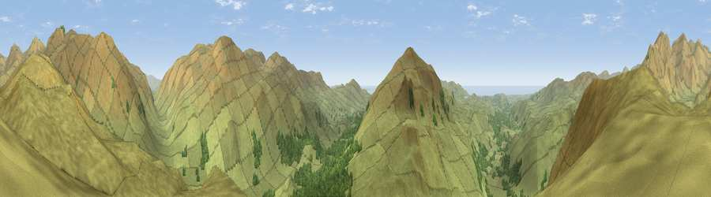

Border End
#3771 in England · top 29% of its area beats it · near BootThe view, rendered

A 360° render of this exact spot computed from the terrain model, tree cover and land cover — summer colours, afternoon light, calibrated against photographs of famous viewpoints. Real trees, hedges and buildings will differ in detail.
The panorama
Grey silhouette: terrain skyline in each direction (720 bearings, Earth curvature and refraction included). Dashed green: skyline with trees (+15 m) and buildings (+8 m) as obstacles. Blue strip: how far the ground is visible on each bearing.
Where the view opens
Wedge length = distance to the farthest visible ground on that bearing (vegetation-aware). Rings at 10, 25 and 50 km.
What fills the view
93% grassland · 6% woodland ·
Angular shares of the visible panorama (visual magnitude), not map area. Landscape diversity 0.12 (0–1 Shannon).
Key numbers
More beautiful places nearby
The staircase of upgrades: each row has a higher view potential than everything closer. Driving times are estimates from straight-line distance, calibrated against real road routing — check an actual route before setting out.
| Place | Direction | Drive | Score |
|---|---|---|---|
| Hard Knott | NNE · 1 km | ~2 min | 73.3 |
| Harter Fell | SSW · 2 km | ~6 min | 79.9 |
| Viewpoint near Coniston | ESE · 3 km | ~8 min | 82.0 |
| South Top | NE · 4 km | ~8 min | 82.3 |
| Crinkle Crags - Long Top | NNE · 4 km | ~9 min | 82.4 |
| Viewpoint near Coniston | ESE · 4 km | ~10 min | 82.8 |
| Dow Crag | SE · 5 km | ~11 min | 83.8 |
| Brim Fell | SE · 5 km | ~11 min | 83.9 |
54.40513, -3.18887 · source: osm peak · position refined by local search. Computed location — check access rights before visiting.